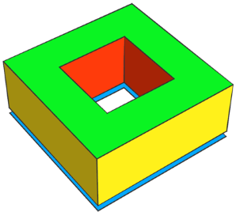
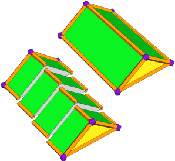

Geometry Tagging: Essential Knowledge
This section explains concepts fundamental to geometry tagging.
Component Tags
Tags are string-based information stored directly on the topological components of a shape's geometry asset. Each face, edge, and vertex may have an arbitrary number of tags. Their purpose is to identify semantically different parts of the geometry, for example when using the
comp operation.
A tag is a string that defines its name. Example: "Name"
Tag hierarchy
Tags are hierarchically grouped with the name separator "." (dot). Example:
"Name1.Name2",
"Name1.Name3"
The dot-separated names within a tag are referred to as subtags.
Tag queries
A tag query is a string that may include wildcards to replace subtags. There are two wildcards:
| ? (question mark) | Matches exactly 1 subtag. Example: "?.Name" |
| * (asterix) | Matches 1 or more subtags. Example: "Name1.*.Name2" |
Based on the hierarchical grouping, the tag query
"Name1" matches not only the exact tag
"Name1" but also tags with additional subtags, such as
"Name1.Name2",
"Name1.Name2.Name3".
Related
Auto-Tags
Selected geometry creation operations automatically apply predefined tags. These tags identify semantically different parts of the output geometry.
Auto-tags applied by a certain operation remain accessible until the operation is called again, replacing them with new ones.
Operations applying auto-tags on faces
Face components are categorized into three principle types: bottom, side, and top. The bottom components correspond to the original faces, while the new side faces may be further categorized as either inner or outer, depending on whether they emanate from a hole.
Extrude
|  |
Init -->
extrude(4)
comp(f) { isTagged("extrude.bottom") : Blue
| isTagged("extrude.side.outer") : Yellow
| isTagged("extrude.side.inner") : Red
| isTagged("extrude.top") : Green }
See extrude operation.
|
Envelope
|
Init -->
envelope(normal,4, 2.5,45, 3,45, 3.5,50, 2,50)
comp(f) { isTagged("envelope.bottom") : Blue
| isTagged("envelope.side.base") : Yellow
| isTagged("envelope.side.slope") : Orange
| isTagged("envelope.side.inner") : Red
| isTagged("envelope.top") : Green }
See envelope operation.
|
Taper
 |
Init -->
taper(4)
comp(f) { isTagged("taper.bottom") : Blue
| isTagged("taper.side") : Yellow }
See taper operation.
|
Roofs
All roof operations apply the same base tag "roof".
|
RoofAutoTags -->
comp(f) { isTagged("roof.bottom") : Blue
| isTagged("roof.side") : Yellow
| isTagged("roof.top") : Green }
Init -->
roofGable(byHeight, 4)
RoofAutoTags
See roofGable operation.
|
 |
Init -->
roofHip(byHeight, 4)
RoofAutoTags
See roofHip operation.
|
|
Init -->
roofPyramid(byHeight, 4)
RoofAutoTags
See roofPyramid operation.
|
|
RoofAutoTags -->
comp(f) { isTagged("roof.bottom") : Blue
| isTagged("roof.side.outer") : Yellow
| isTagged("roof.side.inner") : Red
| isTagged("roof.top") : Green }
Init -->
roofRidge(byHeight, 4)
RoofAutoTags
See roofRidge operation.
|
 |
Init -->
roofShed(byHeight, 4)
RoofAutoTags
See roofShed operation.
|
Boolean 3D operations
|
BoolAutoTags -->
comp(f) { isTagged("bool.A") : Blue
| isTagged("bool.B") : Green }
Sphere --> t(0.3,0.3,0.3) primitiveSphere()
Init -->
extrude(1)
union Sphere
BoolAutoTags
See union operation.
|
 |
Init -->
extrude(1)
subtract Sphere
BoolAutoTags
See subtract operation.
|
|
Init -->
extrude(1)
intersect Sphere
Sphere --> t(0.3,0.3,0.3) primitiveSphere()
See intersect operation.
|
Operations applying auto-tags on edges
The
setback operation and its variants —
setbackToArea,
setbackPerEdge,
shapeLUO and
splitAndSetbackPerimeter — automatically tag edge components using the same base
"setback".
Shape
 |
ShapeAutoTags -->
comp(e) { isTagged("setback.front") : Blue
| isTagged("setback.side") : Yellow
| isTagged("setback.back") : Green }
Init -->
setback(4) { front : ShapeAutoTags }
|
Remainder
 |
RemainderAutoTags -->
comp(e) { isTagged("setback.side") : Yellow
| isTagged("setback.back") : Green
| isTagged("setback.remainder") : Purple }
Init -->
setback(4) { front : NIL
| remainder : RemainderAutoTags }
|
Tag propagation
In general, geometry-modifying operations preserve tags on existing components and propagate tags to newly constructed components when applicable.
Geometry subdivision
Subdivided edge and face components keep their tags. Newly constructed components have no initial tags.
|  |
Init -->
roofGable(byHeight, 4)
split(z) { ~2 : RoofAutoTags }*
Here the auto-tags applied by the roofGable operation are kept by the split operation.
|
Face tag propagation
New faces constructed on top of existing ones get the tags of their source face.
|
Init -->
roofGable(byHeight, 4)
extrude(1)
RoofAutoTags
Here the auto-tags applied by the roofGable operation are automatically propagated to the new faces constructed by the extrude operation.
|
Edge tag propagation
New faces emanating from existing edges get the tags of their source edge.
 |
SetbackAutoTagsOnFaces -->
comp(f) { isTagged("setback.side") : Yellow
| isTagged("setback.back") : Green
| isTagged("setback.remainder") : Purple
| all : White }
Init -->
setback(4) { front : NIL
| remainder : Extrude }
Extrude --> extrude(4)
SetbackAutoTagsOnFaces
Here the edge auto-tags applied by the setback operation are automatically propagated to the extruded side faces.
|
|
Init -->
setback(4) { front : NIL
| remainder : Envelope }
Envelope --> envelope(normal, 4, 2.5, 45, 3, 45, 2, 50, 2, 50)
SetbackAutoTagsOnFaces
Example envelope operation.
|
|
Init -->
setback(4) { front : NIL
| remainder : Offset }
Offset --> offset(-2)
SetbackAutoTagsOnFaces
Example offset operation.
|
Also see the setTagsFromEdgeAttrs operation for more examples.
Geometry cleanup
The cleanupGeometry operation maintains existing tags, preventing the removal of tagged edges and edges between faces with different tags.
|
Init -->
setback(4) { front : NIL
| remainder : OffsetCleanup }
OffsetCleanup --> offset(-2)
cleanupGeometry(all, 0)
SetbackAutoTagsOnFaces
The cleanupGeometry operation only merges faces with the same tags.
|
Operations that clear all tags
By design
These operations replace the current shape's geometry asset, thus existing component tags are cleared.
Unsupported
These operations do (currently) not support working with component tags and clear all tags.